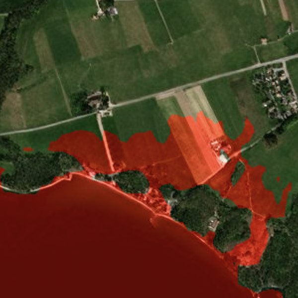
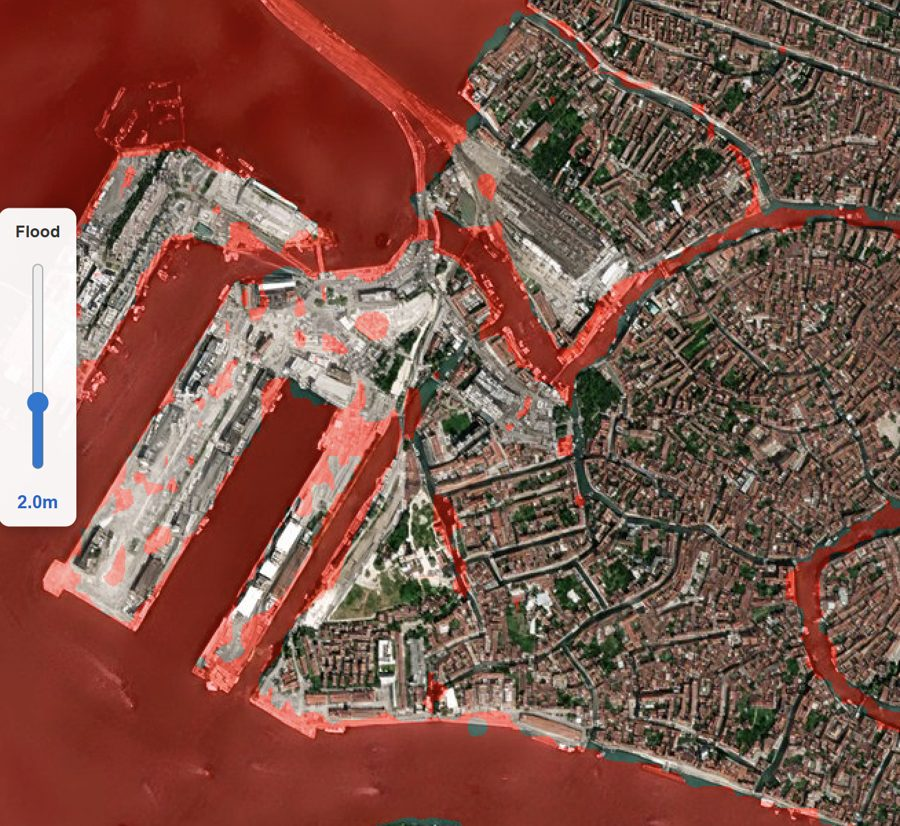

Answer the concrete question — if water reaches this height, exactly which streets and buildings go under — as a real terrain computation over 0.5–1 m BaseDEM.
Credible flood planning is a terrain problem, and public 30 m DEMs blur out the kerbs, embankments and drainage lines that decide where water goes. SkySpera flood simulation runs over BaseDEM at 0.5–1 m vertical accuracy: set any minimum water level at an AOI and see the inundation footprint rendered over Refined Reality 1 m imagery. It supports coastal storm-surge and sea-level scenarios, riverine and urban flooding, and downstream flows from dam-breach or post-fire debris cascades — the same terrain engine behind SkySpera's GLOF and fire-cascade products.




Tell us the ground you need to watch — we'll show you what SkySpera can do with it.
Talk to us